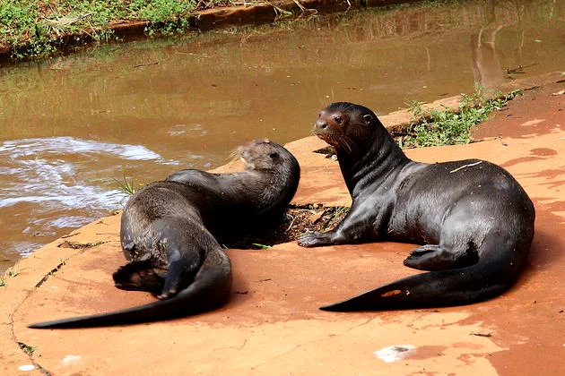
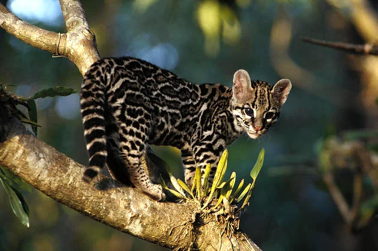
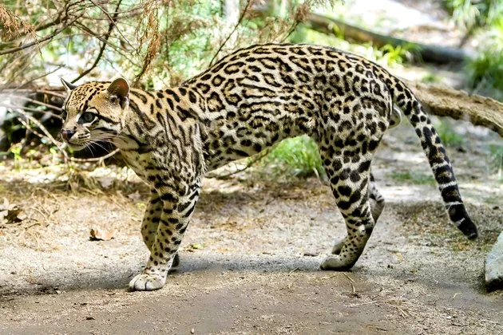
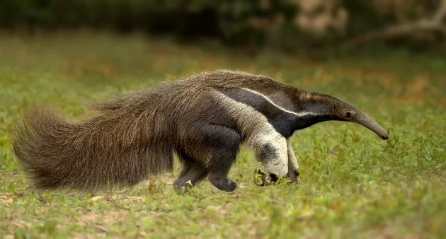

Anta é um mamífero que vive no Cerrado e tem a aparência semelhante a um porco A anta é considerada o maior mamífero
brasileiro. Ela vive no Cerrado brasileiro e apresenta em média 300 kg. Visualmente, ela tem a aparência de um porco.
Sua alimentação é feita principalmente por folhas de árvores e arbustos, além de frutas, ervas e raízes que encontra
pelo caminho. A anta costuma viver próximo de rios, pois apresenta habilidade de natação, o que auxilia a fugir de
seus predadores.
2. Ariranha (Pteronura brasiliensis)

A ariranha é um mamífero endêmico da América do Sul e pode ser encontrada na bacia do Rio Amazonas, além de ser encontrado
no Pantanal. É uma espécie que vive perto de rios, pois sua alimentação é baseada em peixes. Ela costuma ser encontrada na
maior parte do tempo nadando, sendo que uma de suas características é que ela nada para trás.
3. Gato-maracajá (Leopardus wiedii)

O gato-maracajá tem aparência semelhante a de uma jaguatirica O gato-maracajá é um felino nativo da América Central e
do Sul que pode ser encontrado em diversos biomas brasileiros. Além do Cerrado, este animal também pode ser encontrada na Amazônia, Mata Atlântica,
Pampa e Pantanal. Com o visual semelhante ao de uma jaguatirica, o gato-maracajá tem tamanho menor. Para atrair suas presas, ele costuma armar
emboscadas, principalmente para os filhotes de macaco sagui.
4. Jaguatirica (Leopardus pardalis)

A jaguatirica é um felino também conhecido como gato-do-mato e encontrado na Mata Atlântica brasileira, além de outros países da América Latina
e no sul dos Estados Unidos. É muitas vezes confundida com a onça-pintada, porém ela é menor, com comprimento que pode variar entre 25 e 40 cm,
sem contar a cauda. Por possuir dentes bem afiados que ajudam a triturar o alimento, a jaguatirica se alimenta de aves, pequenos mamíferos,
répteis e roedores.
5. Tamanduá bandeira (Myrmecophaga tridactyla)

O tamanduá-bandeira é um mamífero que vive no Cerrado e apresenta hábitos solitários na vida adulta. Para caçar seu alimento, ele costuma caminhar
durante o dia todo. A alimentação do tamanduá-bandeira é baseada em formigas, cupins e larvas. Este animal vem sofrendo com a perda de seu habitat,
atropelamentos e caça, sendo assim considerado uma espécie com risco vulnerável de extinção.